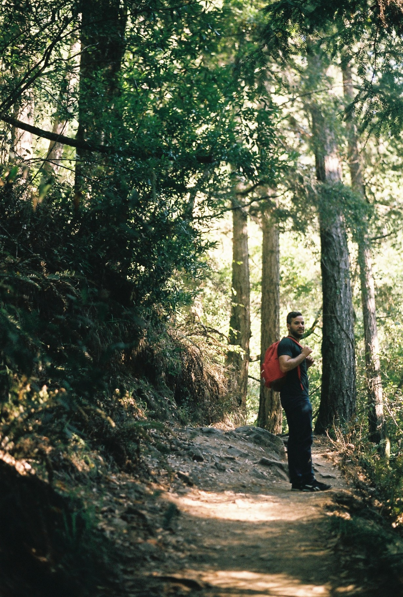
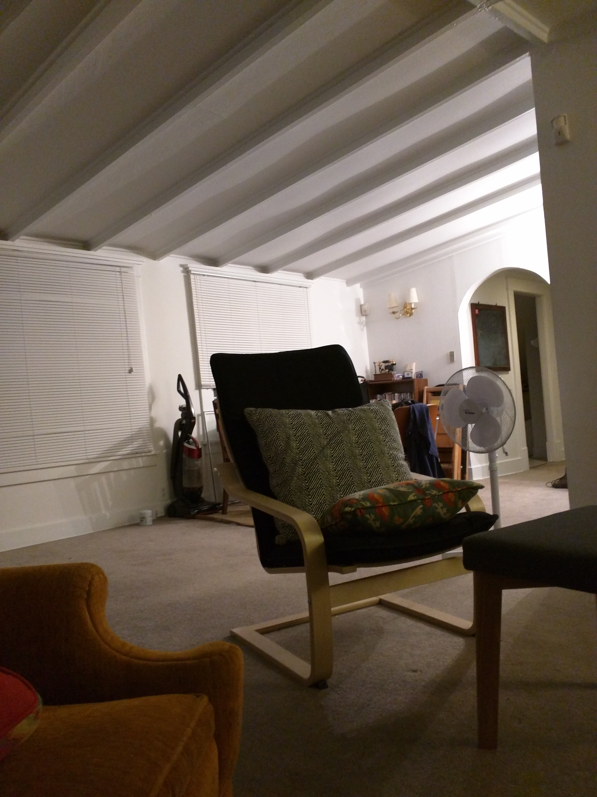

Crater Lake is one of the most beautiful places I have been to. You can learn more about them over at their website.

I have seen many churches and many impressive feats of human engineering.The Sagrada Familia is the most impressive of them all. Learn more here. This is actually a tooth pick scultupre that someone made of it. That was also impressive.

There is something very calming about hiking in a forest that is hundreds of years old.

I would be remiss if I didn't mention my house. This isn't the best picture but at the end of the day there really is no place like home.